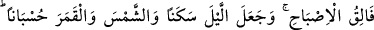
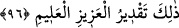
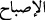

Tâne, buğday, arpa ve darı gibi tohumlara ait ortak isimdir. Mana şöyledir: “Kuru
tohumları yararak içinden bitki çıkaran Allah’tır.” “Çekirdek”, hurma, kayısı ve erik
gibi meyvelerin içinde olan şeylerdir. Buna göre mana: “Sert çekirdekleri yararak
içinden dallı yapraklı ağaçları çıkaran” O’dur.
“Ölüden diriyi çıkarır.” Bu ifade, kendinden öncekini açıklamaktadır. Yani Allah
büyüyüp gelişen bitki ve hayvanları böyle olmayan nutfe ve tohumlardan çıkarmaktadır.
“Diriden de ölüyü çıkarır.” Nutfe ve tohum gibi ölü hükmünde olan şeyleri de bitki
ve hayvan gibi canlılardan çıkarır. “Ölü” ve “diri” kelimeleri, büyüyüp gelişen şeyler
ile cansız (câmid) şeylerden mecazdır. Büyüyüp gelişenler, diriye benzetilmiştir.
Gerçekten diri, duyu organları ile canlılığa ve iradî hareket edebilme gücüne sahip olan
canlılara denir. Gerçekten ölü ise canlılık vasfına sahip olduğu halde bu özelliği
kaybetmiş şeylere denir. Bazıları bu lafızları hakikat manasında alarak âyeti, “Allah ölü
nutfeden canlı bir insanı, tavuktan cansız bir yumurtayı çıkarır.” diye tefsir etmişlerdir.
İbn Abbas (r.anhümâ) ise şöyle demiştir: İbrahim (a.s.)’da olduğu gibi Allah mü’mini
kâfirden, Nuh (a.s.)’ın oğlunda olduğu gibi kâfiri mü’minden, itâatkar kuldan âsî çocuğu
veya bunun aksini, cahilden âlimi ve bunun aksini, ahmaktan akıllıyı ve bunun aksini
çıkarır.
Âyetin işârî tefsiri şöyledir: Allah “Lâ ilâhe illallah” kelimesindeki ölü harf
tohumlarından îman ağacını çıkarır. Yine ölü nifâkı, diri “Lâ ilâhe illallah” dan çıkaran
O’dur.
“İşte” şanı yüce ve kadir-i mutlak, tek başına ibadete lâyık olan “Allah budur.” “O
halde nasıl yüz çeviriyorsunuz?” Nasıl olup da ona ibadeti bırakıp başkasına
yöneliyorsunuz? Bunun hiçbir çıkar yolu yoktur. Burada hitap, Kureyş kafirlerinedir.
Çünkü, sure Mekke’de inmiştir.
96. O, sabahı aydınlatandır. O, geceyi dinlenme zamanı, güneş ve ayı (vakitlerin
tayini için) birer hesap ölçüsü kılmıştır. İşte bu, azîz olan (ve her şeyi) pek iyi bilen
Allah’ın takdiridir.
“Karanlığı yarıp sabahı ortaya çıkaran O’dur.” Âyetteki “__WORD__ kelimesi, gündüz
ışığına girmek manasına masdardır. Sabah kelimesi buradan alınmıştır. Yâni, “tan
vaktini yarıp gündüzün aydınlık ve parlaklığının ortaya çıkması” demektir.
Gündüzün yorgunluğunun giderilmesi için “geceyi dinlenme zamanı, güneşi ve ayı
birer hesap (ölçüsü) yapmıştır.”
Güneş ile ayı vakitlerin hesap edildiği farklı devirler üzere kılmıştır. Allah dönüşünü